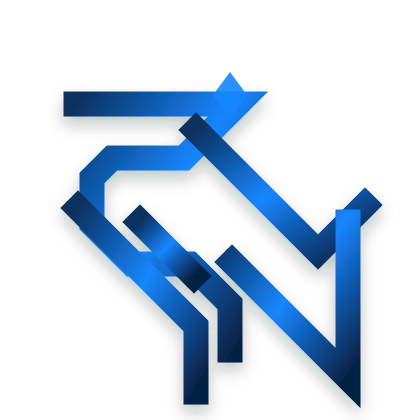

علم و فیزیک
کنجکاوی درباره ساختار طبیعت؛ از کوانتوم و نجوم تا پرسشهایی که هنوز پاسخ نهایی ندارند.

SHAHRIAR VNطراحی، علم، فناوری و جهانسازی در یک فضای شخصی و مستقل؛ جایی برای پروژههایی که قرار نیست صرفاً ساخته شوند، بلکه باید هویت داشته باشند.
چهار مسیر اصلی که نگاه من را شکل میدهند.
کنجکاوی درباره ساختار طبیعت؛ از کوانتوم و نجوم تا پرسشهایی که هنوز پاسخ نهایی ندارند.
ساخت هویت، رابط و سیستمهایی که هم دقیقاند و هم شخصیت دارند.
تبدیل ایدههای پیچیده به محصولات واقعی، سریع و قابل توسعه.
ساخت دنیاهایی با تاریخ، منطق، فرهنگ و قواعد مستقل؛ برای بازی، فیلم و تجربههای تعاملی.
دو پروژه مستقل با دو زبان بصری متفاوت، اما با یک ذهنیت مشترک: ساختن چیزهای ماندگار.
یک جهان صنعتی ـ کیهانیِ فرسوده که از برخورد زمانها و واقعیتها شکل گرفته است؛ سرد، پویا، بیرحم و در عین حال عمیقاً انسانی.
ورود به Nemorisرسانه مستقل فناوری برای تحلیل، آموزش و کشف؛ پروژهای جدا از این سایت که هویت بصری و محصول خودش را دارد.
ورود به تکانهچیزی را نساز که فقط زیبا باشد؛ چیزی بساز که بعد از رفتنت هم معنا داشته باشد.Shahriar Vaziri Nasab